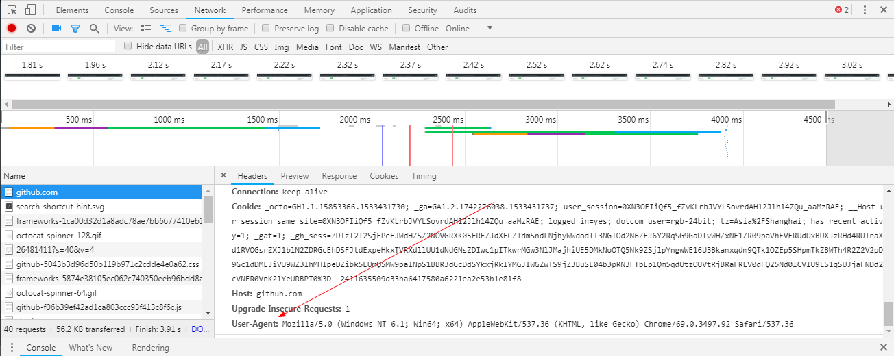

Python urllib
1 前言
这篇博客之前是发过的，当时由于太过求全，添加了不少自己不太明白的内容，
于是便删了，将和 HTTP 协议相关的部分单独拿出来写了篇博客 HTTP 协议相关.
然后呢，前两天临时想写个脚本，要用到 urllib 的东西(平时用的都是 requests),
发现，好的东西都忘完了。
于是就从提交记录中把这篇博客刨了出来，删减了不必要的内容，重新发出来。
2 Python2
这篇博客的内容以 Python2 为基础， Python3 为补充。
2.1 获取资源
Python2 中的 urllib 库分为 urllib 和 urllib2, 两者都可以用于获取 URL 资源，
但使用的更多的是 urllib2.
一个简单的例子：
import urllib2 response = urllib2.urlopen('http://python.org') html = response.read()
HTTP 基于 请求 和 响应 （客服端发出请求，服务器端进行响应）
urllib2 使用一个 Request 对象来表示一个请求，用 Request 对象作为参数调用 urlopen 函数，
将会返回与之对应的响应对象。响应对象类似于一个文件对象，你可以调用 read 方法来获取内容。
import urllib2 req = urllib2.Request('http://www.voidspace.org.uk') response = urllib2.urlopen(req) the_page = response.read()
2.2 发送数据
我们可以使用 POST 请求向服务器发送一些数据，数据在发送之前，需要以标准方式进行编码。
对数据编码需要使用 urllib, 这一点是 2.7 和 3.x 的一个很大的不同。
在 2.7 版本中， urllib 可以对数据进行编码， urllib2 可以发送数据。
在 3.x 版本中， urllib.parse 可以对数据进行编码， urllib.request 可以发送数据。
一个例子：
import urllib import urllib2 url = 'http://www.someserver.com/cgi-bin/register.cgi' values = {'name' : 'Michael Foord', 'location' : 'Northampton', 'language' : 'Python' } data = urllib.urlencode(values) req = urllib2.Request(url, data) response = urllib2.urlopen(req) the_page = response.read()
PS: 有时可能需要其他编码， 详见 HTML Specification, Form Submission
如果构建 Request 时没有传递 data 参数， 那么默认使用 GET 方法。
另外， 可以通过将数据整合到到 url 方式， 使用 GET 请求发送数据。
>>> import urllib2 >>> import urllib >>> data = {} >>> data['name'] = 'Somebody Here' >>> data['location'] = 'Northampton' >>> data['language'] = 'Python' >>> url_values = urllib.urlencode(data) >>> print url_values # The order may differ. name=Somebody+Here&language=Python&location=Northampton >>> url = 'http://www.example.com/example.cgi' >>> full_url = url + '?' + url_values >>> data = urllib2.urlopen(full_url)
即， 使用 query 字符串。
2.3 用户代理
很多情况下， 我们需要在请求的时候， 附加一些信息来标识自己， 让服务器 认可并发出响应。（比如只允许浏览器进行访问的网页）
默认情况下， urllib2 对自己的标识是： Python-urllib/x.y, 如 Python-urllib/2.7.
浏览器通过 User-Agent 来标识自己。但既然只是一段信息，那我们可以通过浏览器的头信息
伪装自己。
可以通过浏览器的 NetWork 面板来获取浏览器的 User-Agent:

比如说：
import urllib import urllib2 url = 'http://www.someserver.com/cgi-bin/register.cgi' user_agent = 'Mozilla/5.0 (Windows NT 6.1; Win64; x64) AppleWebKit/537.36 (KHTML, like Gecko) Chrome/64.0.3282.119 Safari/537.36' values = {'name': 'Michael Foord', 'location': 'Northampton', 'language': 'Python' } headers = {'User-Agent': user_agent} data = urllib.urlencode(values) req = urllib2.Request(url, data, headers) response = urllib2.urlopen(req) the_page = response.read()
PS: 如果 Network 没有内容， 可以刷新一下网页。
2.4 异常处理
urlopen 在不能处理响应的时候会抛出错误 URLError.
HTTPError 是特定情况下引发的 URLError 的子类。
URLError
一般情况下， 如果没有网络连接或服务器不存在， 会引起 URLError.
该异常具有
reason属性， 一个包含错误代码和错误信息的元组。>>> req = urllib2.Request('http://www.pretend_server.org') >>> try: urllib2.urlopen(req) ... except urllib2.URLError as e: ... print e.reason ... (4, 'getaddrinfo failed')
HTTPError
每个来自服务器的响应都包含一个数字 状态码, 有时状态码指示服务器无法完成请求。
默认的处理程序会处理一些响应， 对于哪些不能处理的，
urlopen会引发一个HTTPError.如：
404(找不到页面), 403(禁止请求), 401(需要身份验证).HTTPError 实例具有一个整型的
code属性， 对应服务器发送的错误代码。另外，
BaseHTTPServer.BaseHTTPRequestHandler.responses是一个有用的响应码字典。 你可以打印这个字典来了解一些响应码的含义。from BaseHTTPServer import BaseHTTPRequestHandler.responses for code, info in BaseHTTPRequestHandler.responses.items(): print(code, info)
HTTPError 实例可以作为服务器响应(
response)的实例， 即其拥有 read, geturl, info 方法。>>> req = urllib2.Request('http://www.python.org/fish.html') >>> try: ... urllib2.urlopen(req) ... except urllib2.HTTPError as e: ... print e.code ... print e.read() ... 404 <!DOCTYPE html PUBLIC "-//W3C//DTD XHTML 1.0 Transitional//EN" "http://www.w3.org/TR/xhtml1/DTD/xhtml1-transitional.dtd"> ... <title>Page Not Found</title> ...
现在， 有两种方式来处理这两个异常， 推荐第二种。
# 方式一 from urllib2 import Request, urlopen, URLError, HTTPError req = Request(someurl) try: response = urlopen(req) except HTTPError as e: print 'The server couldn\'t fulfill the request.' print 'Error code: ', e.code except URLError as e: print 'We failed to reach a server.' print 'Reason: ', e.reason else: pass # everything is fine # PS: HTTPError 必须是第一个 # 方式二 from urllib2 import Request, urlopen, URLError req = Request(someurl) try: response = urlopen(req) except URLError as e: if hasattr(e, 'reason'): print 'We failed to reach a server.' print 'Reason: ', e.reason elif hasattr(e, 'code'): print 'The server couldn\'t fulfill the request.' print 'Error code: ', e.code else: pass # everything is fine
urlopen 返回的响应实例或 HTTPError 实例具有 geturl 和 info 方法。
- geturl - 获取当前返回数据的真实 URL
- info - 返回页面的描述信息， 是一个
httplib.HTTPMessage实例
2.5 超时设置
urllib 依赖于 socket, 因此可以通过 socket 来设置超时时间：
import socket import urllib2 # timeout in seconds timeout = 10 socket.setdefaulttimeout(timeout) # this call to urllib2.urlopen now uses the default timeout # we have set in the socket module req = urllib2.Request('http://www.voidspace.org.uk') response = urllib2.urlopen(req)
3 Python3
我们都知道 Python3 和 Python2 不兼容。 对于 urllib 来说更是如此。
3.x 没有 urllib2, 替代它的是 urllib.request. 而与原有 urllib 对应的
是 urllib.parse.
同时， 3.x 版本的 urlopen 返回的响应对象支持上下文管理器， 即可以这样
写代码：
import urllib.request req = urllib.request.Request('http://www.voidspace.org.uk') # urllib2.Request with urllib.request.urlopen(req) as response: # urllib2.urlopen the_page = response.read()
其他接口的调用基本上换个名字就可以了， 但需要注意的是上传数据时进行编码处理：
import urllib.parse import urllib.request url = 'http://www.someserver.com/cgi-bin/register.cgi' user_agent = 'Mozilla/5.0 (Windows NT 6.1; Win64; x64)' values = {'name': 'Michael Foord', 'location': 'Northampton', 'language': 'Python' } headers = {'User-Agent': user_agent} data = urllib.parse.urlencode(values) data = data.encode('ascii') # 上传的数据应该是 bytes req = urllib.request.Request(url, data, headers) with urllib.request.urlopen(req) as response: the_page = response.read()
还有便是那个有用的错误码字典：
from http.server import BaseHTTPRequestHandler for code, info in BaseHTTPRequestHandler.responses.items(): print(code, info)